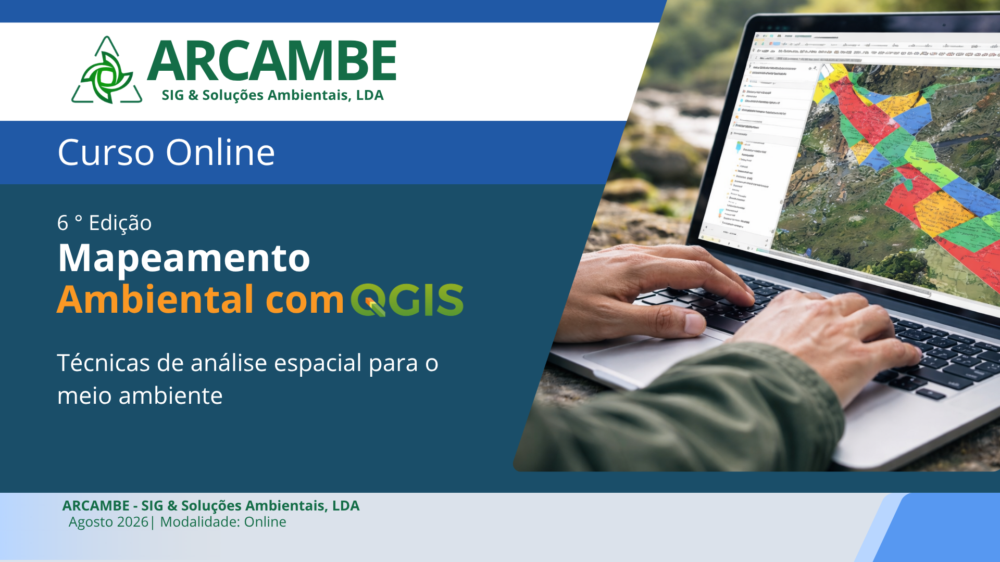
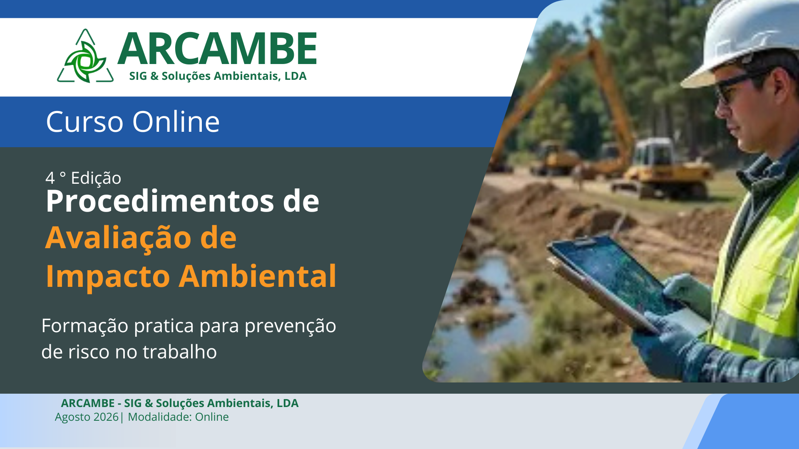

Nova edição 2026
Mapeamento Ambiental com QGIS
Formação prática para produzir mapas ambientais, gerir dados geoespaciais e apoiar análises integradas com QGIS e Google Earth.
Quatro cursos activos com datas, horários, preços e prazos de inscrição confirmados para a próxima edição.
Escolha o curso e use o formulário da landing page para reservar a sua inscrição.

Formação prática para produzir mapas ambientais, gerir dados geoespaciais e apoiar análises integradas com QGIS e Google Earth.

Curso sobre etapas, instrumentos e responsabilidades do processo de Avaliação de Impacto Ambiental no contexto moçambicano.
Formação introdutória para identificar perigos, avaliar riscos e estruturar práticas essenciais de saúde e segurança ocupacional.
Curso para aplicar imagens de satélite, índices ambientais e análise integrada em diagnósticos ambientais com QGIS.
Um pouco da prática vivenciada nos cursos e exemplos de mapas gerados pelos nossos alunos e consultores.

.jpeg)
.jpeg)


O bloco de vídeos continua disponível para quem quer conhecer a metodologia antes de avançar para uma formação certificada.
Produções reais de análise espacial e trabalho de campo realizadas pelas turmas ARCAMBE.


Prova social recuperada dos treinamentos anteriores, mantendo o foco na prática aplicada e nos resultados profissionais.
Antes do curso, demorava dias a criar mapas para relatórios de impacto ambiental. Agora faço em poucas horas, com qualidade que impressionou a minha chefia.
Fizemos o Curso QGIS com o Eng.º Francisco e em 3 semanas já estava a produzir mapas para o meu departamento. A formação é muito prática, focada em casos reais de Moçambique.
Trabalho numa ONG e precisávamos urgentemente de mapas de intervenção. Após o curso, tornei-me a referência SIG da organização.
O WhatsApp fica disponível para perguntas sobre formato, materiais e pagamento. A conversão principal acontece no formulário de cada curso para manter os dados organizados no fluxo de e-mail.